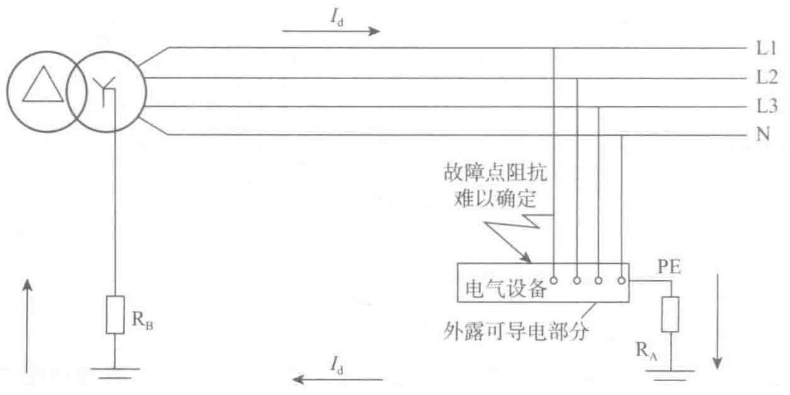

防护电器能迅速切断电源。但如果因故障切断不及时，而PE线上大电流产生的大电压降形成的接触电压又超过接触电压限值，这时人体如触及带电设备外露的导电部分、就有可能导致间接接触电击事故。
在TN系统内选用的自动切断电源的防护电器和回路导体，应能满足当建筑物内发生接地故障时，在规定的时间内切断电源的要求。可以用下式表示：
ZsIa≤U0
式中：Zs——故障回路阻抗，包括相线、PEN线、PE线和变压器（发电机）阻抗（Ω）；
Ia——保证防护电器能在规定时间内动作的最小电流，它为断路器的瞬动电流或熔断器熔体额定电流In的若干倍，即Ia=KIn（A）；
U0——相电压，即相线和中性线之间的标称电压（V）。
在故障点发生阻抗可忽略不计的接地故障后，故障电流Id必须大于Ia才能使防护电器在规定时间内动作，即Id>Ia，而Id=U0/Zs，故ZsIa≤U0。从而可知，在TN系统内发生上述接地故障时，电源的切断与低压系统接地电阻的阻值大小无关。
（2）TT系统
1）TT系统的定义
系统电源端（变压器或发电机的中性点）直接接地，电气装置外露的可导电部分直接接地，此接地点在电气上独立于电源端的接地点。
如图2-20所示，由于电气设备的外壳与电源的接地无电气连接，故障时接地故障电压不会蔓延。接地短路时，由于受电源接地电阻和电气设备接地电阻的限制，短路电流较小，可减少危险，但过电流保护装置不会动作，需用剩余电流保护器RCD进行安全保护。

2）TT系统防电击自动切断电源的条件
TT系统发生接地故障时，其故障回路内除部分是金属导体外，还串联有电源侧的系统接地RB和电气装置外露导电部分的保护接地RA两个接地电阻。如图2-20所示，其故障回